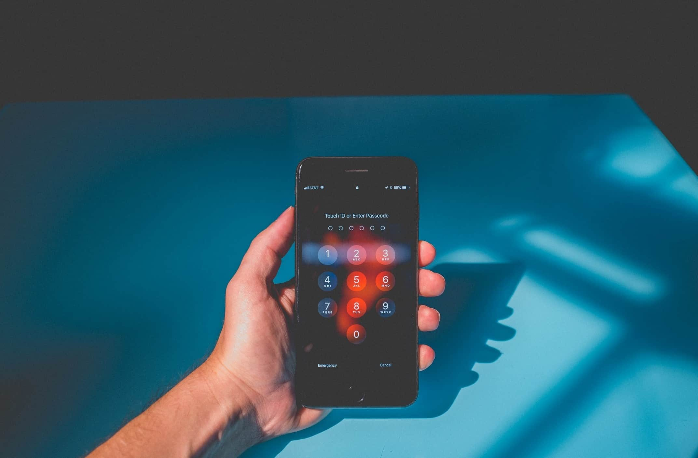

Dicas para gerar senhas fortes e exclusivas
Por que é importante usar senhas fortes
Uma senha forte é a principal barreira para evitar que a maioria de suas contas on-line sejam invadidas. Sem práticas atualizadas, você pode estar usando senhas que os fraudadores cibernéticos conseguem adivinhar facilmente em poucas horas. Expor-se ao roubo de identidades e à extorsão é um risco que você nunca deve correr. Você deve criar senhas capazes de combater os métodos modernos de roubo.
Fraquezas em credenciais de contas são o sonho de consumo de qualquer cibercriminoso. Mas o sucesso deles é o seu pesadelo, e por isso você deve agir para evitar ser a próxima vítima.
Ameaças de segurança de senhas
O comprometimento das senhas abre uma porta para os cibercriminosos acessarem suas contas mais pessoais. Por isso, é óbvio que você vai querer criar senhas que os hackers dificilmente conseguirão descobrir.
O usuário comum criará senhas para enganar hackers humanos. Essa costumava ser uma maneira inteligente de combater um roubo de dados. Os criminosos usavam qualquer informação que encontrassem sobre você e tentavam usar padrões comuns para adivinhar a sua senha. Antes era possível trocar apenas alguns caracteres para criar uma "S3nH@" que garantisse sua segurança. Mas os hackers já conhecem esse truque.
Hoje em dia, os cibercriminosos usam tecnologias sofisticadas para obter suas senhas. Isso é importante porque muitas pessoas tentam usar senhas difíceis de adivinhar, mas não levam em consideração os algoritmos eficientes. Esse tipo de software é projetado para analisar o comportamento do usuário enquanto adivinha suas senhas.
Estes são alguns métodos usados pelos hackers para invadir suas contas:
As invasões baseadas em dicionários usam um programa automatizado para combinar palavras de dicionários de maneiras comuns. Os usuários criam senhas fáceis de lembrar e, por isso, essas ferramentas tentam imitar padrões óbvios.
Suas informações pessoais compartilhadas publicamente e em redes sociais são usadas para mirar diretamente você. Os usuários geralmente incluem nomes, datas de aniversários e até nomes de times do coração nas senhas. Muitas dessas informações podem ser descobertas navegando rapidamente por suas redes sociais.
Os ataques de força bruta usam um programa automatizado para recriar todas as combinações possíveis de caracteres até descobrir sua senha. Diferentemente das invasões baseadas em dicionários, o ataque de força bruta não lida bem com senhas longas. Mas em vários casos, as senhas curtas podem ser facilmente descobertas em poucas horas.
O phishing envolve um golpista pressionando você a entregar dinheiro ou informações valiosas ao hacker. Eles fingem ser confiáveis, geralmente como uma organização de reputação ou alguém que você conhece. Os golpistas de phishing podem ligar, enviar mensagens de texto, e-mails ou mensagens nas redes sociais. Eles também usam aplicativos, sites e perfis de rede social fraudulentos. Se você acha que precisa de proteção contra ataques de phishing, recomendamos usar o Kaspersky Internet Security.
Violações de dados existentes já expuseram muitas senhas e outros dados confidenciais. As empresas têm sido hackeadas com mais frequência, e os hackers expõem os dados on-line para obter lucro. Isso pode ser especialmente ameaçador se você reutiliza senhas antigas, já que contas desatualizadas têm grandes chances de serem comprometidas.
Como criar uma senha forte
Para se proteger dos mais novos métodos de invasão, você precisa de senhas robustas. E se você está se perguntando: "qual é a força da minha senha?", veja algumas dicas de como criar senhas fortes:
- Ela é longa? Tente usar pelo menos 10 ou 12 caracteres, ou o máximo possível.
- Ela é difícil de adivinhar? Evite sequências, como "12345" ou "qwerty", pois elas podem ser hackeadas por força bruta em segundos. Pelo mesmo motivo, evite também palavras comuns ("senha1").
- Ele tem tipos variados de caracteres? Letras minúsculas e maiúsculas, símbolos e números devem fazer parte da senha. A variedade pode tornar a sua senha mais imprevisível.
- Substituições óbvias de caracteres são evitadas?Por exemplo, usar o número zero "0" no lugar da letra "O". Essas substituições já estão codificadas nos softwares de hackeamento atuais. Então, evite isso.
- A senha usa combinações de palavras incomuns? As senhas podem ser mais seguras se usarem palavras inesperadas. Mesmo que você use palavras comuns, é possível organizá-las em uma ordem estranha e certificar-se de que não estejam relacionadas. Ambos os métodos podem neutralizar os hackeamentos baseados em dicionários.
- Você consegue memorizá-la? Use algo que faça sentido para você, mas que será difícil para os computadores adivinharem. Mesmo senhas aleatórias podem ser lembradas pela memória muscular, sendo semilegíveis. Mas senhas que impeçam o seu acesso não ajudam muito.
- Você já usou a senha antes? Reutilizar senhas compromete várias contas. Use sempre algo original.
- A senha apresenta uma regra difícil de ser adivinhada por computadores? Um exemplo pode ser uma senha de três palavras com quatro letras cada, onde as duas primeiras letras de cada palavra são substituídas por números e símbolos. Por exemplo: "?4sa#2to?6da" em vez de "casagatovida".
Exemplos de senhas seguras
Geralmente, existem duas abordagens principais para criar senhas confiáveis:
Senhas com palavras, que são baseadas em uma combinação de várias palavras reais. Palavras incomuns com caracteres trocados ou aleatórios foram usadas no passado, como "Tr1que" para "truque" ou "F4t7b4LL" para "futebol". Os hackeamentos de algoritmos já conhecem esse método e, por isso, as melhores senhas com palavras geralmente usam uma mistura de palavras comuns não relacionadas em ordem aleatória. Às vezes, é possível usar uma frase cortada e invertida com um padrão que só o usuário conhece.
Por exemplo, "gaT!Esc#l?Cas!" (usando as palavras gato, escola e casa.)
As senhas com palavras funcionam porque são:
- Fáceis de lembrar.
- Enganam as invasões baseadas em dicionários e de força bruta.
Sequências de caracteres aleatórios, que são puramente ao acaso e usam uma combinação de todos os tipos de caracteres. Essas senhas incluem letras maiúsculas e minúsculas, símbolos e números em ordem espontânea. E como não há um método lógico de organização dos caracteres, é incrivelmente difícil de adivinhá-las. Mesmo um software de hackeamento pode levar trilhões de anos para descobrir essas senhas.
Um exemplo de sequência de caracteres aleatórios pode ser "f2m_+Vm3cV*j" (que pode ser lembrado usando o mnemônico, fruta 2 maçã _ + VISA música 3 café VISA * joao).
As sequências de caracteres aleatórios funcionam porque são:
- Quase impossíveis de adivinhar.
- Muito difíceis de hackear.
- Podem ser lembradas pela memória e por mnemônicos.
Como usar e memorizar senhas
Com tantas senhas exclusivas para ter em mente, você precisa ter cuidado com a maneira como as armazena.
Para se manter em segurança, evite:
- Anotar senhas em papel.
- Salvar senhas em aplicativos de notas do seu telefone.
- Salvar senhas no preenchimento automático do seu navegador.
Mas considere usar os seguintes métodos:
Ative a autenticação de dois fatores em todas as suas contas mais importantes. Essa é uma verificação de segurança adicional após uma entrada de senha bem-sucedida. Ela usa métodos que só você tem acesso, tais como: e-mail, mensagem de texto, biometria (ex.: impressão digital, face ID) ou uma chave de segurança USB. O recurso 2FA mantém criminosos e curiosos longe das suas contas, mesmo que sua senha seja roubada.
Atualize suas senhas mais importantes com frequência. Ao decidir atualizar suas senhas, certifique-se de realmente alterá-las. É uma prática perigosa manter a mesma senha, mudando apenas alguns caracteres. Você deve atualizar suas senhas regularmente, por exemplo, todos os meses. Mesmo que não atualize todas as senhas, certifique-se de alterá-las pelo menos para as seguintes contas:
- Banco on-line
- Pagamento de contas
- Senha master do gerenciador de senhas
- Redes sociais
- E-mails
- Operadora do telefone
Em última instância, lembre-se de que, se a sua senha é fácil para você, provavelmente ela também será para os hackers. Senhas complexas são a melhor maneira de se proteger.